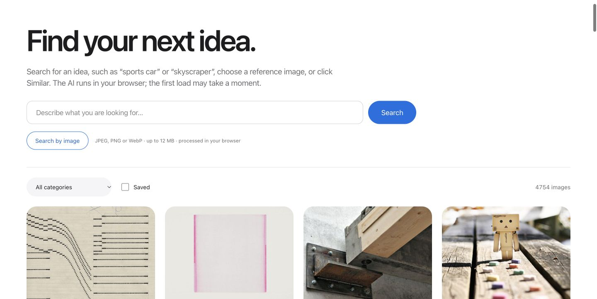
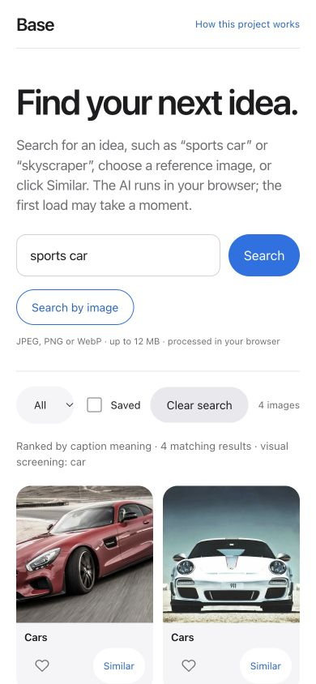

Base AI Visual Library
A visual discovery application connecting a curated image collection with semantic search, reference-image matching and browser-based AI.
REQUEST DEMO ACCESS ↗

01 — THE PRODUCT
Find an idea without browsing every board.
A personal collection of visual references becomes useful when it can be searched by intent. Base brings 4,754 images across 28 categories into one interface: describe an idea, provide a reference image or explore visually similar results.
The main actions stay close to the gallery. Search, category filters, saved images and Similar support a continuous discovery flow on desktop and mobile.
02 — SEARCH & DATA
A prepared index, responsive discovery.
The collection combines source images, catalogue metadata, text representations and precomputed CLIP visual embeddings. The hosted application serves a prepared snapshot, while browser-based models support interactive search without a paid generative-AI API.
Text queries use caption meaning; reference-image search compares visual representations. A relevance cutoff and object screening help separate an explicit object request from superficially related results. The result set is filtered rather than padded to a fixed size.

03 — ARCHITECTURE & ACCESS
Prepare once. Share deliberately.
The development pipeline integrates catalogue data from Supabase and source images from GitHub. The Vercel deployment uses a bundled catalogue and precomputed indexes so browsing does not depend on repeated database reads.
Demo invitations have an expiry, with owner access kept separate. Access is checked on the server before application resources are served. Reference images are processed in the browser; saved favourites stay in browser storage.
04 — EXPLORE THE PROJECT
A live application with invitation access.
The screenshots show the working deployed interface. For a guided review, request a time-limited invitation, try a text query such as “sports car”, then choose Search by image or Similar to explore the visual index.